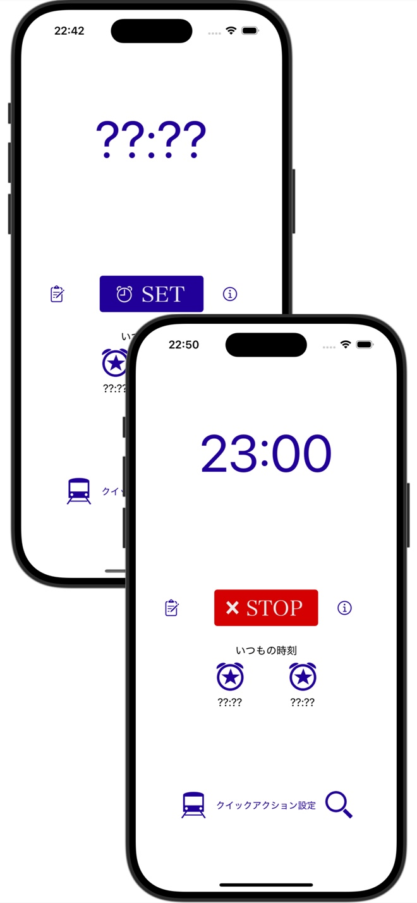
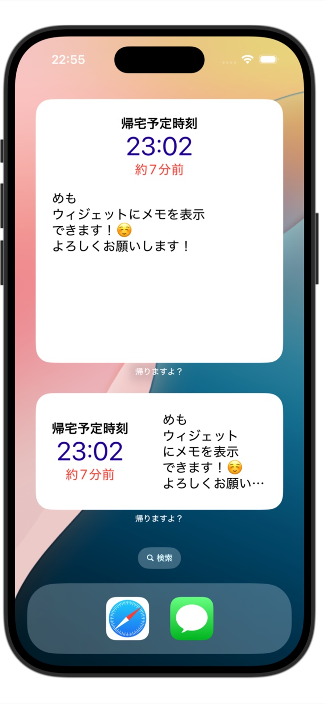

帰る時間を繰り返しお知らせ
飲み会、食事会、残業などで帰宅時間を忘れないよう、指定した時刻の前後に通知します。
帰りますよ？
帰宅時間の通知
飲み会にも、残業にも。帰る時間を繰り返しお知らせして、うっかり遅くなるのを防ぎます。
日本国内のApp Storeで配信しています

飲み会、食事会、残業などで帰宅時間を忘れないよう、指定した時刻の前後に通知します。
アラーム時刻をホーム画面・ロック画面のウィジェットにも表示できます。
通知は音と振動に対応。マナーモードや端末の振動設定によって、お知らせの方法が変わります。
